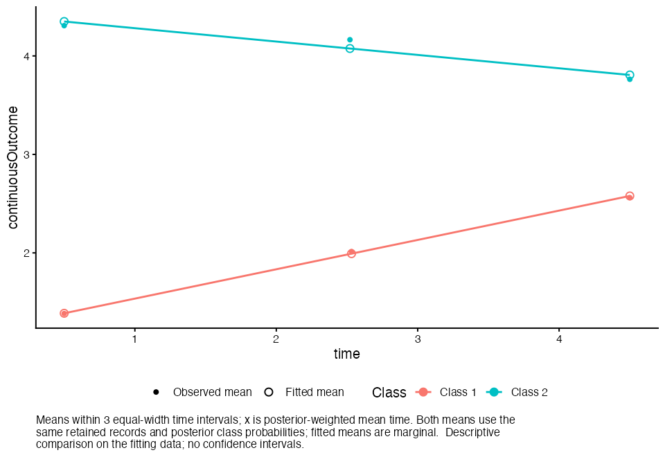
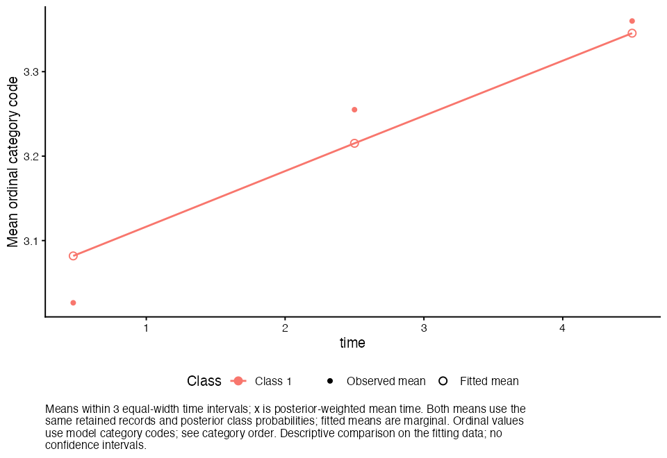

Executed for jaspTrajectories 0.1.0, lcmm 2.2.2,
R 4.5.2 on aarch64-apple-darwin20. All reference models were refitted during this run;
previously saved estimates were not used as evidence for this build.
Source checks, independently constructed reference fits, native JASP result objects and desktop
interaction are distinguished below. Passing these tests supports the implemented calculations on the
listed cases; it does not establish model suitability for every dataset or prove a global maximum.
Start with C01, then C04, C05,
O01 and P01/P02. These establish basic continuous fitting,
multiple classes, random effects, ordinal fitting and missing-data handling before testing the remaining cases.
Install the matching public beta before comparing the desktop results.
What these references establish
The CSV files come from established datasets distributed with lcmm. Each reference result was fitted
directly in lcmm, separately from the module. Eligible one-class cases were also fitted with independent
estimators: Gaussian regression with lm, Gaussian mixed models with nlme::lme(method="ML"),
and ordered probit regression with MASS::polr(method="probit").
These are newly calculated benchmarks for the exact models listed here, not copied published model estimates.
The examples omit covariates unsupported by this first module. They do not establish the true number of classes, statistical coverage, or recovery of the original generating models.
Data and provenance
lcmm-continuous.csv: data_hlme, Y/Time/ID renamed to
outcome/time/subject; 326 records, 100 participants. This is simulated data with covariates and three generating
classes. Our reduced models do not attempt to recover that generating specification.
Official documentation.
lcmm-ordinal.csv: data_lcmm, Ydep3/Time/ID renamed;
1,678 records, 300 participants. Simulated ordinal data from a more complex joint model.
Official documentation.
paquid-ordinal.csv: real Paquid cohort subsample, HIER/age/ID renamed;
2,250 records, 500 participants, 46 missing HIER responses. HIER codes 0, 1, 2 and 3 represent increasing physical dependency.
Official documentation.
lcmm-continuous-missing.csv: controlled modification of the continuous file,
with the first recorded outcome for each of the first ten participants blanked. No rows were removed.
Exact changes.
How to run each test
Open the indicated CSV in JASP. Use subject as Subject ID, time as Measurement Time,
and outcome as Outcome. First set subject to Nominal, time to Scale,
and outcome to Scale for continuous tests or Ordinal for ordinal tests. Numeric IDs may import as Scale;
JASP's default automatic nominal conversion has a 100-level limit. Explicitly set the ID column to Nominal
in the data editor for larger samples; this requires no global preference change and is not a module sample-size limit.
Verify ordinal categories are ordered numerically, including 0 where present.
Open Trajectories → LCGA and GMM. Apply the test's outcome type, analysis, class count, polynomial,
random effects and missing-data policy. A one-class model is an intentional reference case.
Under Estimation set Random Starts = 30, Iterations per Preliminary Start = 50,
Maximum Final Iterations = 1000, Random Seed = 12345.
Leave Proportional Random-Effects Variance by Class unchecked.
Enable Growth Coefficients, Class Sizes and Classification, and Class Trajectories.
Leave 95% Pointwise Confidence Bands unchecked for these comparisons.
Compare the results below. Record observations in jasp-checklist.csv,
and save each tested analysis in a .jasp file. Changing CSVs should start a new JASP data session.
Comparison rules
Counts and numbers of parameters must match exactly. Compare log-likelihood, AIC and BIC within 0.001
using sufficient displayed decimal places. Rounded display values may differ in their final digit.
Compare growth coefficients and SEs within 0.0001 when enough decimals are visible.
The native summaries round coefficients to five decimals. The reference term t corresponds to the
module's .time; both use the reported scaled time, not the CSV's raw time.
Class labels may swap. Match complete trajectories, then compare the corresponding coefficient and
classification rows. A class-number swap alone is not a failure. Match integer class counts exactly after relabelling.
Check plotted directions, curvature, endpoints and original-time axes. Precise trajectory values are in
expected-predictions.csv. Ordinal graphs show expected consecutive
category codes; Paquid 0–3 is mapped to 1–4. Ordinal coefficients are on the latent probit scale.
Use the same rows, missingness policy, covariance restriction and scaled-time origin. Complete-subject
deletion can change the time transform. BIC here uses participants, not observation rows.
If a mixture's likelihood differs by more than 0.001, verify settings and category order, then repeat with more starts
and another seed. A different local maximum must be investigated; it is not automatically a wrapper defect.
The reference fit with seed 12345 converged and matched the module. At least one additional seed failed to converge or gave a different likelihood. Treat this as an advanced starting-value sensitivity check; see the seed table below.
128 direct-reference, sample and independent-estimator checks passed, plus 22 independent likelihood/posterior checks. The full numeric differences and tolerances are recorded below. This does not replace checking CSV import and controls in the desktop application.
The independent density calculations evaluate the fitted parameter vectors. They independently reconstruct likelihoods and posterior probabilities; they do not independently optimize the mixture models.
Independent estimators
case
method
nativeLogLik
independentLogLik
logLikDifference
maximumFixedEffectDifference
C01
stats::lm (Gaussian ML likelihood)
-1125.309599
-1125.309594
-0.000005
0.000007
C02
stats::lm (Gaussian ML likelihood)
-1124.936301
-1124.936296
-0.000005
0.000005
C03
stats::lm (Gaussian ML likelihood)
-1124.354436
-1124.354431
-0.000005
0
C05
nlme::lme (ML, same random-effects structure)
-795.746853
-795.746848
-0.000005
0
C07
nlme::lme (ML, same random-effects structure)
-808.004651
-808.004646
-0.000005
0
O01
MASS::polr (ordered probit)
-3856.577194
-3856.577198
0.000003
0
M01
stats::lm (Gaussian ML likelihood)
-1093.789523
-1093.789519
-0.000004
0.000009
M02
stats::lm (Gaussian ML likelihood)
-1017.571646
-1017.571642
-0.000004
0.000008
These independent estimator tolerances are absolute: 0.001 for likelihood and raw fixed effects. Gaussian likelihoods use ML, not REML. lm residual standard errors and t tests are not the module’s ML variance and normal Wald tests. No independent ordinal GMM integration reference was fitted.
Mixture starting-seed checks
Each mixture reference was refitted with two additional seeds, using the same 30 starts and iteration settings. Matching likelihoods support repeatability on these datasets, not proof of a global optimum. Native random starts can emit a numerical warning before the selected final fit converges.
case
seed
convergence
loglik
differenceFromReference
sameLikelihoodWithin0_001
note
C04
3821
1
-990.462888
0
TRUE
C04
54321
1
-990.462888
-0
TRUE
C06
3821
1
-784.268697
0
TRUE
C06
54321
1
-784.268697
0
TRUE
O02
3821
2
-3455.023353
-0
FALSE
Did not reach full convergence; likelihood is not a validated solution
O02
54321
1
-3455.023353
-0
TRUE
Seed variability or nonconvergence detected. Some seed runs did not converge or found a different likelihood. Use the table above to identify affected cases; the reference values specify seed 12345.
Complete regression suite
Every script is run by the documented command. Source-level checks exercise the current checkout; the JASP/plot scripts exercise the installed package. The preflight requires their version numbers to match and constrains package lookup to the selected library and embedded R. Exit status and wall time are retained for every stage.
Random-intercept regression evidence: convergence=1; signed SD=-0.140976325251; uncorrected maximum limit error=0.0040766062502; corrected maximum limit error=4.4408920985e-16.
The converged fixture retains a diagonal covariance setting and a negative signed random-effect parameter. Its interval draws are compared with independently calculated ordinal marginal expectations using the same draws. The test also checks that the fitted object, likelihood, fit statistics and point predictions remain unchanged. See the complete regression log.
For the JASP and plot scripts, a PASS line denotes a group of native-object/plot assertions; the counts should not be interpreted as independent statistical experiments. The confidence-band regression checks include the diagonal ordinal random-intercept case and independent analytical marginal expectations. They check computation, not frequentist coverage.
Observed versus fitted plot examples

Continuous, posterior-weighted observed and fitted means

Ordinal, posterior-weighted observed and fitted category codes
The plot-coordinate tests also cover six refitted reference models, including ordinal random-intercept GMMs, and assert that unsupported groups remain gaps. Their PNGs and exact summary CSVs are in the observed/fitted examples.
Build, package and installer checks
check
status
notes
Clean dependency restore and installer build
PASS
111 locked inputs verified and 101 restored into an empty private library; jaspBase then rebuilt from pinned source and ragg supplied with libdeflate notice. JASP 0.99.0.0 arm64/R 4.5.2; nonfatal embedded-R R.css warning retained.
Final dependency contents and input hashes
PASS
Original input lock plus all 101 final dependency tree hashes recorded after the explicit source build and notice addition. No separate system/user R library supplied dependencies.
Pinned jaspBase and Common source build
PASS
jaspBase 0.20.4 rebuilt at commit 74daf64143f4f22d4f0e1b0a8163e6a892873fc8 with all 49 Common files at 1204d1892b1233af145bb548fe80719f331ea693. Matching Rcpp 1.1.1 headers used only for compilation; final Rcpp unchanged. Native JSON/results load check passed.
R source package check
PASS WITH WARNING
No errors or notes; one existing inst/help directory warning. The checked source includes the required third-party notice files.
Fresh isolated installer installation
PASS
Native JASP bundle manager successfully installed the neutral-directory build into an empty temporary location. The desktop user installation was not changed.
Installed bundle manifest and dependency identity
PASS
Installed manifest matches complete public 0.1.0 macOS arm64/R-4.5 distribution. All 101 dependency trees, rebuilt jaspBase DLL/Common/provenance and both libdeflate notice copies match the tested build. ragg native code and Rcpp remain unchanged.
Installed bundle code and resources match source
PASS
All 21 runtime definitions and seven installed resources match the source. NEWS.md and the help page also match; DESCRIPTION fields agree, including Version 0.1.0.
Native JASP results from installed bundle
PASS
Continuous and ordinal native tables, factor ordering, plots, plot export and cached-fit behavior passed using the isolated bundle. This does not substitute for desktop interaction.
Complete validation from flat public repository
PASS
All eight recorded stages passed in 440 seconds: 257 numerical assertions, 14 fresh reference cases and native output/plot checks. The 21 recorded source fingerprints match the release source. Installed documentation is checked separately.
Machine-readable checklist. Current evidence must match this run’s module version and source fingerprint. Installer hashes, where recorded, identify the exact tested artifact.
Desktop interaction and file persistence
check
status
notes
Desktop walkthrough for 0.1.0
NOT PERFORMED
Interactive CSV import, option changes, and saving/reopening JASP documents have not been verified for this installer. Native installation and output checks are recorded separately.
Machine-readable checklist. Current evidence must match this run’s module version and source fingerprint. Installer hashes, where recorded, identify the exact tested artifact.
Scope and limitations
These checks cover the listed models and regression fixtures only.
They do not establish a global likelihood maximum, valid class-number selection, statistical coverage of
confidence bands or correctness for every possible dataset and option combination.
The reference suite includes ordinal GMMs with one class and a random intercept; no independent ordinal
GMM numerical-integration estimator is supplied. Separate prediction fixtures check ordinal random slopes
and diagonal random-intercept confidence calculations. Missingness checks validate row handling and observed-data
calculations; they do not establish that missingness is ignorable in a substantive dataset.
Desktop outcomes are limited to the explicit checklist above. If a desktop action is absent or marked untested,
it remains unverified. Results were generated on the recorded platform; other operating systems are unverified.
Reproduce this report
From the public package/repository root containing DESCRIPTION,
scripts/ and validation/, run sh scripts/run-tests.sh after building/installing the
matching module into the documented clean library.
The command runs all five test scripts, refits all 14 reference
models through separate native and module paths, performs additional seed fits and independent density/estimator
checks, and regenerates this report. It does not install packages or alter JASP's installed user module.
The existing manual checklist is preserved. See README.md for environment settings.
The source package's R CMD check intentionally excludes these JASP-dependent standalone tests;
the complete command above is required. A successful package check alone is not this validation suite.
Execution logs are retained with only the checkout's absolute path replaced by <project>.
Data, model settings, full-precision output and fitted objects are included for audit and replay.
Public build records use a neutral temporary directory. The desktop checklist explicitly identifies actions that have not been tested.